Contents
% Cadeira de Modelação e Simulação % % 3º Trabalho de laboratório % Dinâmica de um metrónomo básico % % Turno: 4ª feira, das 9h às 11h % % Elementos do grupo: % Gonçalo Vítor Nº73229 % Catarina Cruz Nº73319 % Diogo Brás Nº68212 warning off
Ex4
close all clear all L = .4; M = .1; l = .3; m = .4; k = 5; beta = .1; g = 10; J = 1/3*M*L^2 + m*l^2; U = [0 0]; x0 = [pi/16 0]; sim('metronomo') plot(tout, theta) grid on; title('Evolução de \theta ao longo do tempo') ylabel('\theta/rad') xlabel('t/s') figure plot(tout, omega) grid on; title('Evolução de \omega ao longo do tempo') ylabel('\omega/rad s^{-1}') xlabel('t/s') figure plot(theta, omega) title('Espaço de estados') ylabel('\omega/rad s^{-1}') xlabel('\theta/rad')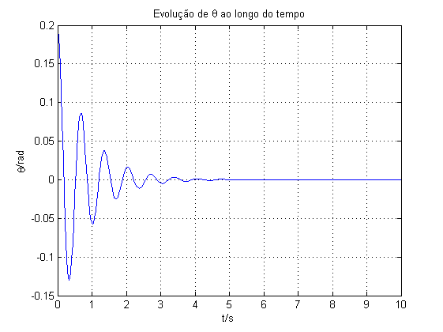 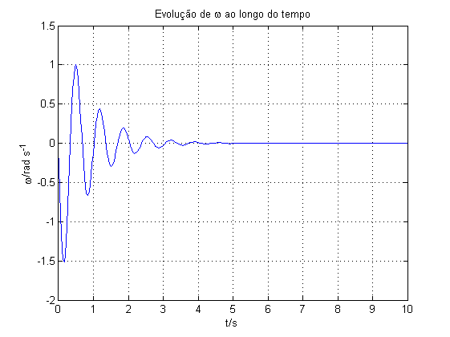 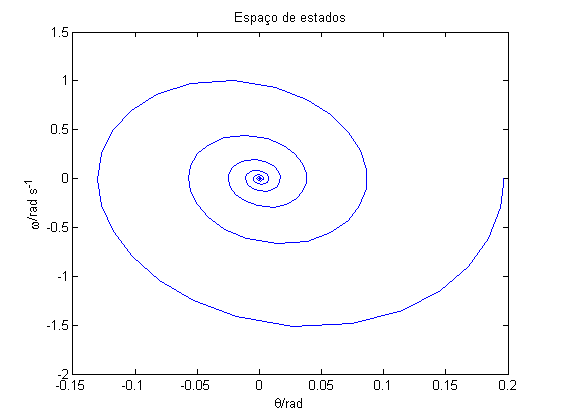
Ex5
close all clear all L = .4; M = .1; l = .3; m = .4; k = 5; beta = .1; g = 10; J = 1/3*M*L^2 + m*l^2; U = [0 0]; x0 = [pi/16 0]; A = [0 1;(M*g*L/2+m*g*l-k)/J -beta/J]; B = [0; 1/J]; C = [1 0; 0 1]; D = [0; 0]; sim('metronomo_modelo_estado') plot(tout, Y.signals.values(:,1)) grid on title('Evolução de \theta ao longo do tempo') ylabel('\theta/rad') xlabel('t/s') figure plot(tout, Y.signals.values(:,2)) title('Evolução de \omega ao longo do tempo') ylabel('\omega/rad s^{-1}') xlabel('t/s') grid on % Para efeitos de simulação a matriz C deve ser escolhida como a matriz % identidade, pois permite uma visualização mais directa das variáveis de % estado através das saídas do sistema.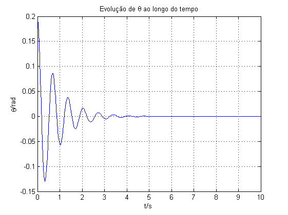
Ex6
close all;clear all; %Dados do problema L = .4; M = .1; l = .3; m = .4; k = 5; beta = .1; g = 10; J = 1/3*M*L^2 + m*l^2; U = [0 0]; x0 = [pi/16 0]; b = [0 1]; for i = 1:1:length(b) beta = b(i); A = [0 1;(M*g*L/2+m*g*l-k)/J -beta/J]; B = [0; 1/J]; C = [1 0; 0 1]; D = [0; 0]; sim('metronomo_modelo_estado') figure; plot(tout, Y.signals.values(:,1)); grid on; title('Evolução de \theta ao longo do tempo'); ylabel('\theta/rad'); xlabel('t/s'); legend(['\beta = ', num2str(beta)]); figure; plot(tout, Y.signals.values(:,2)); grid on; title('Evolução de \omega ao longo do tempo') ylabel('\omega/rad s^{-1}') xlabel('t/s') legend(['\beta = ', num2str(beta)]); figure plot(Y.signals.values(:,1), Y.signals.values(:,2)) title('Espaço de estados') ylabel('\omega/rad s^{-1}') xlabel('\theta/rad') legend(['\beta = ', num2str(beta)]); end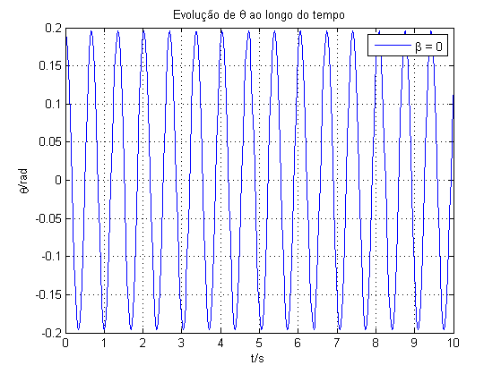 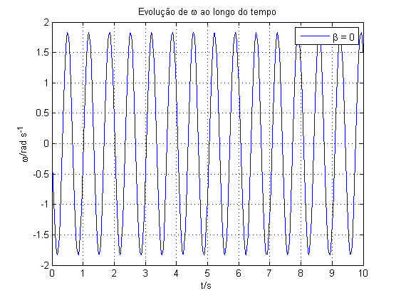 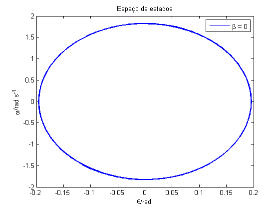 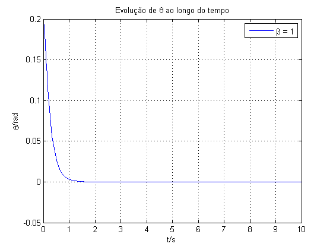 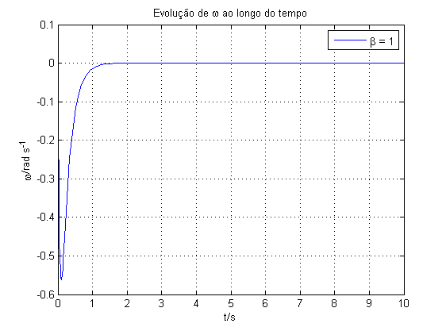 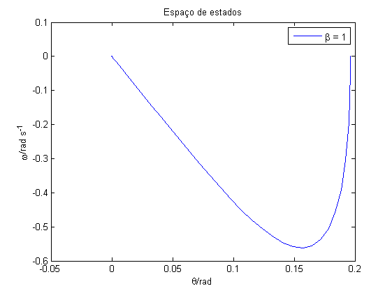
close all ; clear all; % Dados do problema L = .4; M = .1; l = .3; m = .4; k = 5; g = 10; J = 1/3*M*L^2 + m*l^2; U = [0 0]; b = [0 .1 1]; x01i = [pi/2 pi 3*pi/2]; x02i = [0 1 10]; for i = 1:1:length(b) figure hold on beta = b(i); for c1 = 1:1:length(x01i) for c2 = 1 : 1 : length(x02i) x0 = [x01i(c1) x02i(c2)]; A = [0 1;(M*g*L/2+m*g*l-k)/J -beta/J]; B = [0; 1/J]; C = [1 0; 0 1]; D = [0; 0]; sim('metronomo_modelo_estado') plot(Y.signals.values(:,1), Y.signals.values(:,2)) end end ylabel('\omega/rad s^{-1}') title(['Espaço de estados para \beta = ',num2str(beta)]); minimo_1 = min(Y.signals.values(:,1)); % theta maximo_1 = max(Y.signals.values(:,1)); minimo_2 = min(Y.signals.values(:,2)); % omega maximo_2 = max(Y.signals.values(:,2)); %Obtenção do campo de vectores: x = linspace(minimo_1,maximo_1,21); y = linspace(minimo_2,maximo_2,21); [x, y] = meshgrid(x,y); Px = []; Py = []; for i1=1:size(x,1) for j=1:size(x,2) p = A * [x(i1,j); y(i1,j)]; Px(i1,j) = p(1); Py(i1,j) = p(2); end end valores_proprios = eig(A); lambda1 = valores_proprios(1); lambda2 = valores_proprios(2); xlabel(['\theta/rad \lambda_1=', num2str(lambda1),' \lambda_2=',num2str(lambda2)]) quiver(x, y, Px, Py); hold off end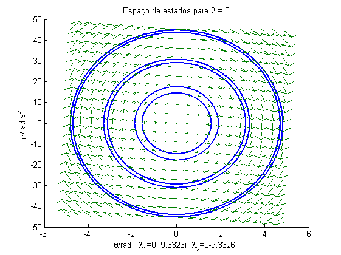 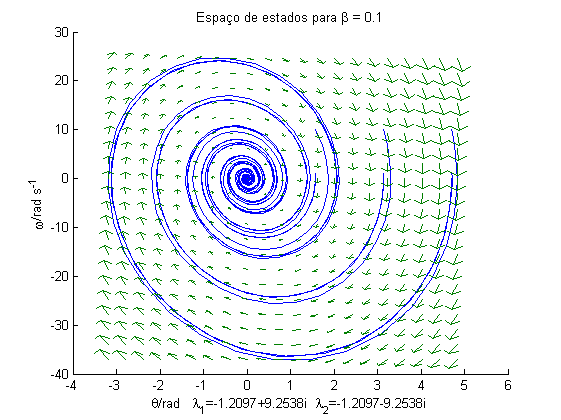 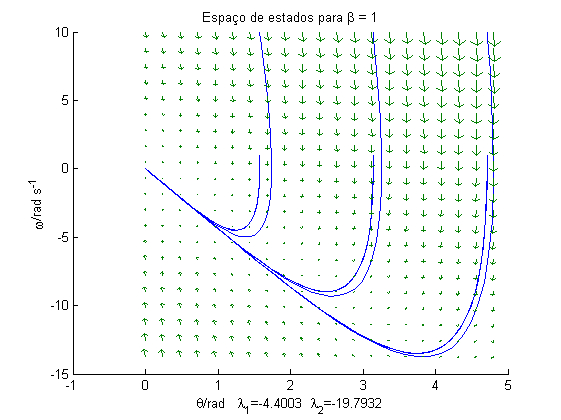
Valores próprios reais implicam vectores próprios de componentes reais, representáveis no plano como "rectas"
Como o modo temporal de theta é dado por exponenciais de expoente real bem como a sua derivada, teremos dois modos representados por cada um dos valores próprios e vectores próprios associados, que irão "atraír" o movimento no plano de estados.
Por este motivo, independentemente das condições iniciais, nos gráficos correspondentes a beta = 1, vemos as curvas tender para o mesmo segmento de recta
Com os valores próprios puramente imaginários as exponenciais que representam a variação temporal, serão invariantes em módulo, razão pela qual, para beta = 0, obtemos diferentes circunferências com módulo dependente da condição inicial
Para beta = 0.1, temos uma conjugação de ambos os movimentos, observando-se a variação correspondente à parte imaginária, bem como um decaimento de módulo associado à parte real
Ex7
Cálculo exterior dos vectores próprios de A: [V1,D1] = eig(A); Usamos então estes valores como condições iniciais (primeiro) e (segundo) em que só irá ser visível um modo e ainda um valor intermédio (terceiro) para notar a diferença [V1,D1] = eig(A) V1 = 0.2216 -0.0505 -0.9751 0.9987
close all;clear all; %Dados do problema L = .4; M = .1; l = .3; m = .4; k = 5; g = 10; J = 1/3*M*L^2 + m*l^2; U = [0 0]; b = [1]; beta = b(1); primeiro = [0.2216 -0.9751]; segundo = [-0.0505 0.9987]; terceiro = (primeiro + segundo); x = linspace(-5,0,21); y = linspace(-19.7932,15,21); [x, y] = meshgrid(x,y); x01i = [primeiro(1) segundo(1) terceiro(1)]; x02i = [primeiro(2) segundo(2) terceiro(2)]; figure hold on Px = []; Py = []; vec = ['b' 'g' 'r' 'b']; %vector com as cores que irão ser usadas para representar % cada curva eig_x=[-0.15:0.01:0.3];%vector de -0.15 com passos de 0.01 em 0.01 até 0.3 eig_y=eig_x*(-0.9751/0.2216);%vector próprio eig_y2=eig_x*(-0.9987/0.0505);%vector próprio plot(eig_x,eig_y,'k--'); %linhas a tracejado representam a direcção do vector próprio plot(eig_x,eig_y2,'k--'); %linhas a tracejado representam a direcção do vector próprio for c2 = 1 : 1 : length(x02i) x0 = [x01i(c2) x02i(c2)]; A = [0 1;(M*g*L/2+m*g*l-k)/J -beta/J]; B = [0; 1/J]; C = [1 0; 0 1]; D = [0; 0]; sim('metronomo_modelo_estado') plot(Y.signals.values(1,1), Y.signals.values(1,2),vec(c2),'Marker','o'); %marcação do ponto inicial de cada curva plot(Y.signals.values(:,1), Y.signals.values(:,2),vec(c2),'LineWidth',2); % xlabel('\theta/rad'); end for i1=1:size(x,1) for j=1:size(x,2) p = A * [x(i1,j); y(i1,j)]; Px(i1,j) = p(1); Py(i1,j) = p(2); end end ylabel('\omega/rad s^{-1}'); title('Espaço de estados'); axis([-0.15 0.3 -2 2]); hold off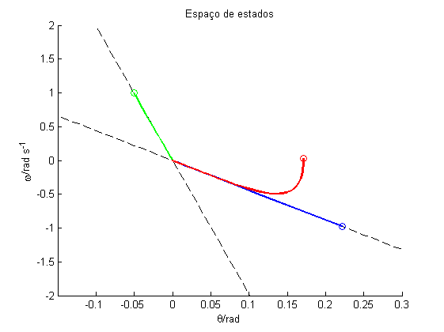
Neste gráfico, a curva a verde e a curva azul (ambos segmentos de recta) representam as condições iniciais igualadas ao primeiro e ao segundo vector próprio da matriz A, respectivamente, e a curva a vermelho (não linear) representa uma combinação dos dois modos. Assim, quaisquer condições iniciais que estejam sobre as rectas definidas pelos vectores próprios (valores múltiplos de cada um dos vectores próprios)conduzem a respostas que apenas apresentam um dos modos (resposta no espaço de fase limitada a essas mesmas rectas). Por outro lado, condições iniciais que não estejam sobre as rectas definidas pelos vectores próprios, conduzem a respostas que são combinações lineares dos dois modos existentes (respostas não lineares no espaço de fase).
Ex8
close all; clear all; %Dados do problema L = .2; M = .1; beta = .001; g = 10; k=1; m=0.5; l1=0.080217; l2=0.176298; %Iteração por vários ângulos de deflexão iniciais for x01=[pi/16 pi/6 pi/3] x0 = [x01 0]; %Para 200 BPM l=l1; J = 1/3*M*L^2 + m*l^2; U = [0 0]; A = [0 1;(M*g*L/2+m*g*l-k)/J -beta/J]; B = [0; 1/J]; C = [1 0; 0 1]; D = [0; 0]; %Simulação do modelo linear: sim('metronomo_modelo_estado'); figure; hold on; plot(tout, Y.signals.values(:,1),'b'); axis([0 2 min(Y.signals.values(:,1)) max(Y.signals.values(:,1))]); ylabel('\theta/rad'); xlabel('t/s'); grid on; %Retiram-se dois valores para obter o período das oscilações [x_z1,y_z1]=ginput(2); somas1 = x_z1(end)-x_z1(1);med1=somas1/2; %2 periodos freq1=2*pi/med1; bpm1=(freq1/(2*pi))*60*2; %Simulação do modelo não linear: sim('metronomo'); plot(tout, theta(:,1),'r'); axis([0 2 min(theta(:,1)) max(theta(:,1))]); ylabel('\theta/rad');xlabel('t/s');grid on; %Retiram-se dois valores para obter o período das oscilações [x_z2,y_z2]=ginput(2); somas2 = x_z2(end)-x_z2(1);med2=somas2/2; freq2=2*pi/med2;bpm2=(freq2/(2*pi))*60*2; title(['Evolução de \theta ao longo do tempo para ',num2str(l),' \theta_{0}=',num2str(x01)]) legend(['Linear: ',num2str(freq1),'rad/s (', num2str(bpm1) ,' BPM)'],['Não linear: ', num2str(freq2) ,'rad/s (', num2str(bpm2) ,' BPM)' ]); hold off; %Para 20 BPM l=l2; J = 1/3*M*L^2 + m*l^2; U = [0 0]; A = [0 1;(M*g*L/2+m*g*l-k)/J -beta/J]; B = [0; 1/J]; C = [1 0; 0 1]; D = [0; 0]; %Simulação do modelo linear: sim('metronomo_modelo_estado'); figure; hold on; plot(tout, Y.signals.values(:,1),'b'); axis([0 10 min(Y.signals.values(:,1)) max(Y.signals.values(:,1))]); ylabel('\theta/rad');xlabel('t/s');grid on; %Retiram-se dois valores para obter o período das oscilações [x_z1,y_z1]=ginput(2);somas1 = x_z1(end) - x_z1(1); med1=somas1/1; freq1=2*pi/med1; bpm1=(freq1/(2*pi))*60*2; %Simulação do modelo não linear: sim('metronomo'); plot(tout, theta(:,1),'r'); axis([0 10 min(theta(:,1)) max(theta(:,1))]); ylabel('\theta/rad');xlabel('t/s');grid on; %Retiram-se dois valores para obter o período das oscilações [x_z2,y_z2]=ginput(2); somas2 = x_z2(end) - x_z2(1); med2=somas2/1; freq2=2*pi/med2; bpm2=(freq2/(2*pi))*60*2; title(['Evolução de \theta ao longo do tempo para ',num2str(l),' \theta_{0}=',num2str(x01)]) legend(['Linear: ',num2str(freq1),'rad/s (', num2str(bpm1) ,' BPM)'],['Não linear: ', num2str(freq2) ,'rad/s (', num2str(bpm2) ,' BPM)' ]); hold off; end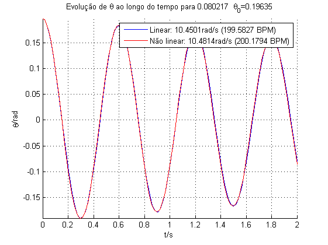 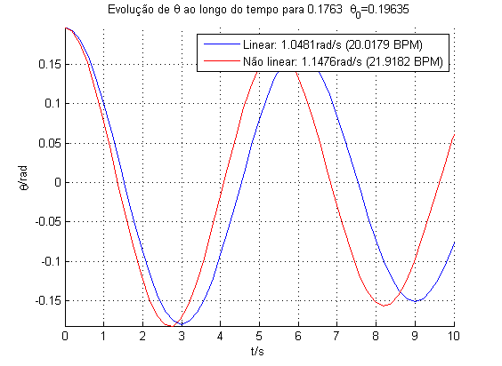 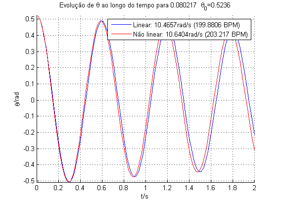 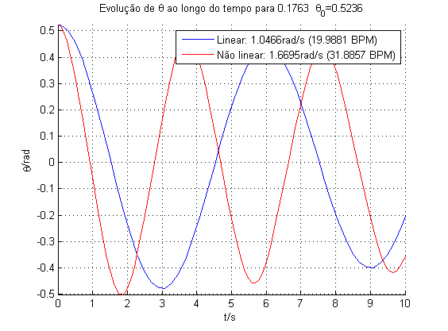 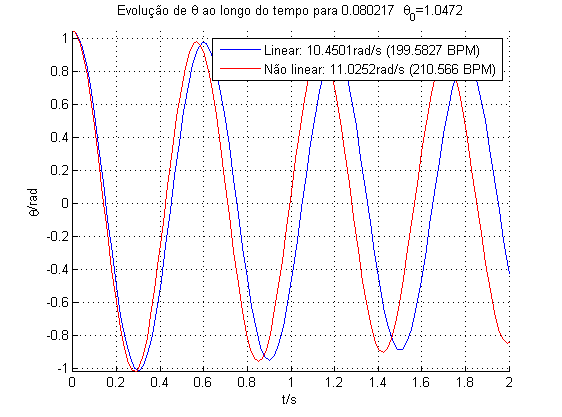 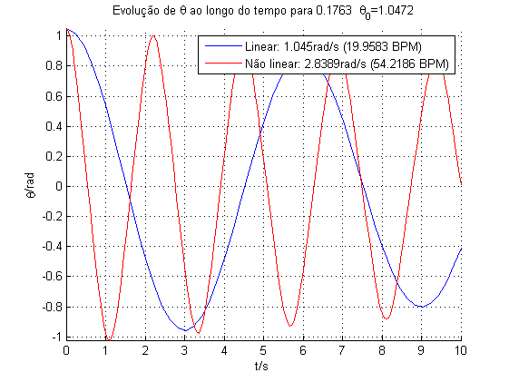
Confirmou-se o dimensionamento realizado por simulação (a primeira linear realizada permite aferir a frequência), tendo as frequências medidas sido muito próximas das pretendidas.
Foi realizada também uma comparação entre o modelo linearizado e o modelo não linear do sistema para diferentes ângulos de deflexão iniciais, tendo-se retirado as seguintes conclusões:
-- Para frequências de oscilação mais lentas, a discrepância entre modelos é bastante mais relevante -- Com o aumento do ângulo de deflexão, também a diferença entre modelos é mais visível
Estas conclusões estão de acordo com o esperado, tendo em conta que para um mesmo período de tempo a não linearidade é mais visível em oscilações mais espaçadas temporalmente, e que para um ângulo de deflexão maior, que pressupõe maior "distância" percorrida entre extremos, também a não linearidade tem mais efeito
Ex9
close all; clear all; %Dados do problema L =0.2; M = 0.1; m = 0.5; k = 1; beta = 0.001; g=10; l_200 = 0.080217; %posicao da massa para 20BPM l_20 = 0.176298; %posicao da massa para 200BPM x0 = [pi/16 0]; %20 BPM's l = l_20; J = 1/3*M*L^2 + m*l^2; A = [0 1;(M*g*L/2+m*g*l-k)/J -beta/J]; B = [0; 1/J]; C = [1 0]; %pretende-se apenas a saída theta D = [0]; U = [0 0]; %Representação dos gráficos H=ss(A,B,C,D); %definicao do sistema pelo espaco de estados figure; bode(H); title('Diagramas de Bode para L = L(20BPM)'); grid; %200 BPM's l = l_200; J = 1/3*M*L^2 + m*l^2; A = [0 1;(M*g*L/2+m*g*l-k)/J -beta/J]; B = [0; 1/J]; C = [1 0]; %pretende-se apenas a saída theta D = [0]; %Representação dos gráficos H=ss(A,B,C,D);%definicao do sistema pelo espaco de estados figure; hold on; bode(H); title('Diagramas de Bode para L = L(200BPM)'); grid; %simulação temporal para w(binário) = 5.24rad/s % aproximadamente 100BPM t = (linspace(0,100,10000))'; w = 5.24; %radianos por segundo l = l_20; J = 1/3*M*L^2 + m*l^2; A = [0 1;(M*g*L/2+m*g*l-k)/J -beta/J]; B = [0; 1/J]; C = [1 0 ; 0 1]; %pretende-se apenas a saída theta D = [0; 0]; %Representação dos gráficos U = [t sin(w*t)]; sim('metronomo_modelo_estado',t); figure; hold on; plot(t,U(:,2),'b'); axis([0 20 -20 20]); plot(t, Y.signals.values(:,1),'g'); %Retiram-se dois valores para obter o período das oscilações [x_z,y_z]=ginput(2); somas = x_z(end)-x_z(1); med=somas/2; %2 periodos freq1=2*pi/med; bpm1=(freq1/(2*pi))*60*2; U(:,1)=U(:,1)*J; sim('metronomo',t); plot(t, theta(:,1),'r'); %Retiram-se dois valores para obter o período das oscilações [x_z,y_z]=ginput(2); somas = x_z(end)-x_z(1); med=somas/2; %2 periodos freq2=2*pi/med; bpm2=(freq2/(2*pi))*60*2; ylabel('\theta/rad');xlabel('t/s'); grid on; legend('Binário externo', 'Modelo linear', 'Modelo não linear'); title(['Evolução de \theta ao longo do tempo para w(binário)=',num2str(w),' rad/s\newlineLinear: \omega(\theta)=',num2str(freq1),'rad/s (',num2str(bpm1),' BPM) Não linear: \omega(\theta)=',num2str(freq2),'rad/s (',num2str(bpm2),' BPM)']) hold off; % simulação temporal para w(binário) = 0.524rad/s % aproximadamente 10BPM % aproximadamente 100BPM t = (linspace(0,100,10000))'; w = 0.524;%radianos l = l_20; J = 1/3*M*L^2 + m*l^2; A = [0 1;(M*g*L/2+m*g*l-k)/J -beta/J]; B = [0; 1/J]; C = [1 0 ; 0 1]; %pretende-se apenas a saída theta D = [0; 0]; %Representação dos gráficos U = [t sin(w*t)]; sim('metronomo_modelo_estado',t); figure; hold on; plot(t,U(:,2),'b'); axis([0 100 -100 100]); plot(t, Y.signals.values(:,1),'g') %Retiram-se dois valores para obter o período das oscilações [x_z,y_z]=ginput(2); somas = x_z(end)-x_z(1); med=somas/2; %2 periodos freq1=2*pi/med; bpm1=(freq1/(2*pi))*60*2; U(:,1)=U(:,1)*J; sim('metronomo',t); plot(t, theta(:,1),'r'); %Retiram-se dois valores para obter o período das oscilações [x_z,y_z]=ginput(2); somas = x_z(end)-x_z(1); med=somas/2; %2 periodos freq2=2*pi/med; bpm2=(freq2/(2*pi))*60*2; ylabel('\theta/rad'); xlabel('t/s');grid on; legend('Binário externo', 'Modelo linear', 'Modelo não linear'); title(['Evolução de \theta ao longo do tempo para w(binário)=',num2str(w),' rad/s\newlineLinear: \omega(\theta)=',num2str(freq1),'rad/s (',num2str(bpm1),' BPM) Não linear: \omega(\theta)=',num2str(freq2),'rad/s (',num2str(bpm2),' BPM)']) hold off;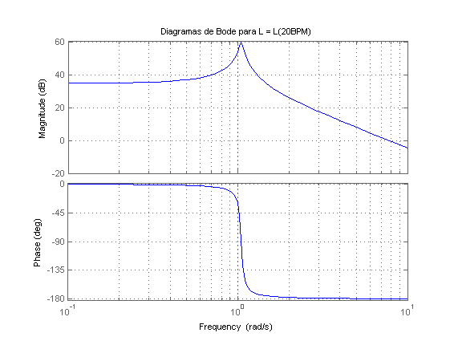 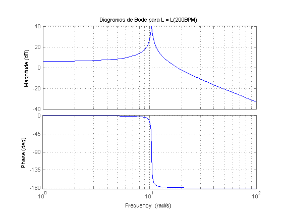 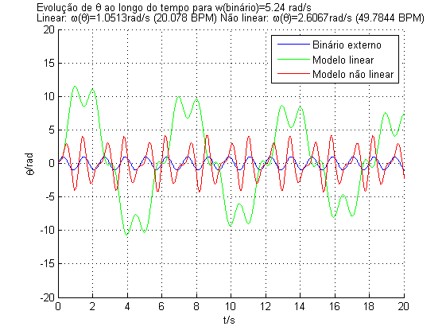 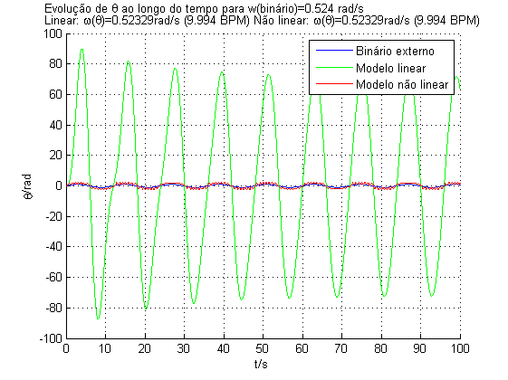
Em relação às simulações realizadas para a frequência de 5,24 rad/s (100BPM):
-- No modelo linear, o ganho em amplitude face à entrada foi G=8 --> G=18.07 dB -- No modelo não linear este ganho foi G=3.5 --> G=10.881 dB -- O ganho de amplitude em dB do diagrama de Bode é 6dB
A discrepância nestes valores é muito elevada
-- No modelo linear, a fase nas oscilações menores parecem estar em oposição de fase face à entrada -- No modelo não linear, parece que entrada e saída estão em fase -- Do diagrama de Bode, teríamos que a fase seria 180 graus (oposição de fase)
Os resultados não foram conclusivos
Em relação às simulações realizadas para a frequência de 0,524 rad/s (10BPM):
-- No modelo linear, o ganho em amplitude face à entrada foi G=75 --> G=37,5 dB -- No modelo não linear este ganho é praticamente unitário, ou seja 0dB -- O ganho de amplitude em dB do diagrama de Bode é 37,2dB
O modelo linear está em concordância com o diagrama de Bode, como esperado
-- No modelo linear, as oscilações estão em fase face à entrada -- No modelo não linear, o mesmo ocorre -- Do diagrama de Bode, teríamos que a fase seria 0 graus (entrada e saída em fase)
Os resultados estão de acordo com o esperado
Não faz sentido operar um metrónomo neste regime, pois não pretendemos aplicar um binário externo sinusoidal, apenas compensar o decaimento das oscilações pontualmente, por exemplo nas passagens pela vertical, como se verá no exercício seguinte Para além disto, as saídas obtidas com este binário não correspondem ao funcionamento oscilatório pretendido no uso de um metrónomo
Ex10
close all; clear all; %Para efeitos de comparação, utilizam-se os valores do exercício 8 x01=pi/16; L = .2; M = .1; beta = .001; k=1; m=0.5; g = 10; x0 = [x01 0]; t=linspace(1,100,1000); l1=0.080217; l2=0.176298; %Para 200BPM: l=l1; w=10.47; J = 1/3*M*L^2 + m*l^2; U = [0 0]; A = [0 1;(M*g*L/2+m*g*l-k)/J -beta/J]; B = [0; 1/J]; C = [1 0; 0 1]; D = [0; 0]; %Sem mecanismo de ajuste sim('metronomo',t); figure; plot(tout, theta(:,1),'r'); axis([0 50 min(theta(:,1)) max(theta(:,1))]) ylabel('\theta/rad'); xlabel('t/s');grid on; [x_z,y_z]=ginput(2); somas = x_z(end)-x_z(1); n = length(x_z) - 1; med=somas/10; %2 periodos freq=2*pi/med; bpm=(freq/(2*pi))*60*2; title(['Com compensação:Evolução de \theta ao longo do tempo para ',num2str(l),'\newline\theta_{0}=',num2str(x01),' Frequênca calculada',num2str(freq),' rad/s ; ',num2str(bpm),'BPM']) %Com mecanismo de ajuste sim('metronomo10',t); figure; plot(tout, theta(:,1),'b'); axis([0 50 min(theta(:,1)) max(theta(:,1))]) ylabel('\theta/rad');xlabel('t/s');grid on; [x_z,y_z]=ginput(2); somas = x_z(end)-x_z(1); n = length(x_z) - 1; med=somas/10; %2 periodos freq=2*pi/med; bpm=(freq/(2*pi))*60*2; title(['Com compensação:Evolução de \theta ao longo do tempo para ',num2str(l),'\newline\theta_{0}=',num2str(x01),' Frequênca calculada',num2str(freq),' rad/s ; ',num2str(bpm),'BPM']) %Para 20BPM: l=l2; w=1.047; J = 1/3*M*L^2 + m*l^2; U = [0 0]; x0 = [x01 0]; A = [0 1;(M*g*L/2+m*g*l-k)/J -beta/J]; B = [0; 1/J]; C = [1 0; 0 1]; D = [0; 0]; %Sem mecanismo de ajuste sim('metronomo',t); figure; plot(tout, theta(:,1),'r'); axis([0 100 min(theta(:,1)) max(theta(:,1))]); ylabel('\theta/rad');xlabel('t/s');grid on; [x_z,y_z]=ginput(2); somas = x_z(end)-x_z(1); n = length(x_z) - 1; med=somas/10; %2 periodos freq=2*pi/med; bpm=(freq/(2*pi))*60*2; title(['Com compensação:Evolução de \theta ao longo do tempo para ',num2str(l),'\newline\theta_{0}=',num2str(x01),' Frequênca calculada',num2str(freq),' rad/s ; ',num2str(bpm),'BPM']) %Com mecanismo de ajuste sim('metronomo10',t); figure; plot(tout, theta(:,1),'b'); axis([0 100 min(theta(:,1)) max(theta(:,1))]); ylabel('\theta/rad');xlabel('t/s');grid on; [x_z,y_z]=ginput(2); somas = x_z(end)-x_z(1); n = length(x_z) - 1; med=somas/10; %2 periodos freq=2*pi/med; bpm=(freq/(2*pi))*60*2; title(['Com compensação:Evolução de \theta ao longo do tempo para ',num2str(l),'\newline\theta_{0}=',num2str(x01),' Frequênca calculada',num2str(freq),' rad/s ; ',num2str(bpm),'BPM'])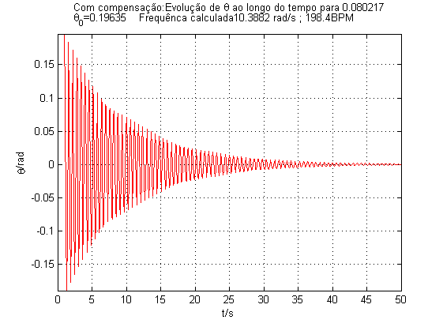 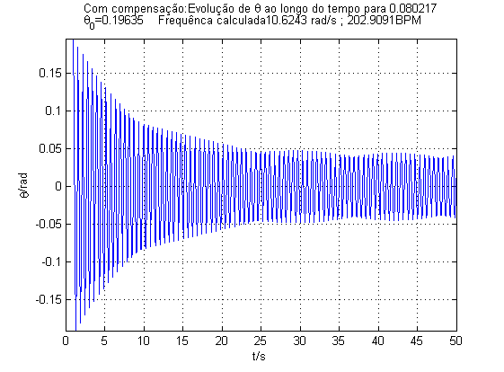 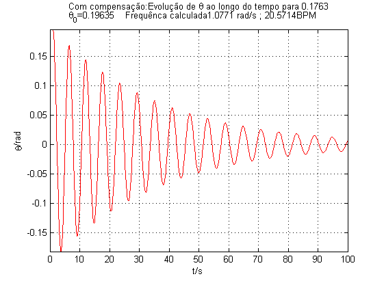 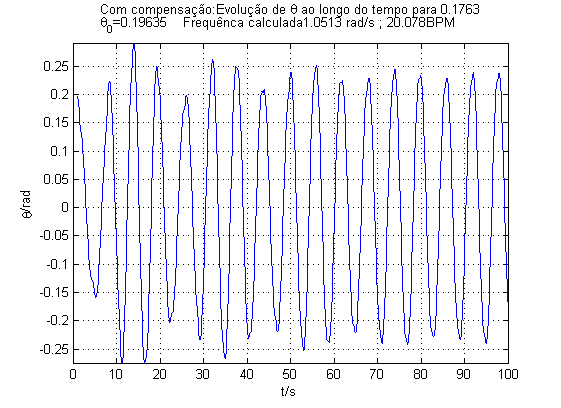
Através de pequenos impulsos nas passagens pela vertical ( ângulo de deflexão = 0) no metrónomo consegue contrariar-se o decaimento do ângulo; a amplitude que melhor se adequou em geral é dada em relação a J, sendo metade deste valor. Desta forma, para frequências em torno dos 20 BPM e 200 BPM obteve-se uma compensação razoável
Verificou-se que a frequência de oscilação pretendida não foi afectada significativamente por este mecanismo